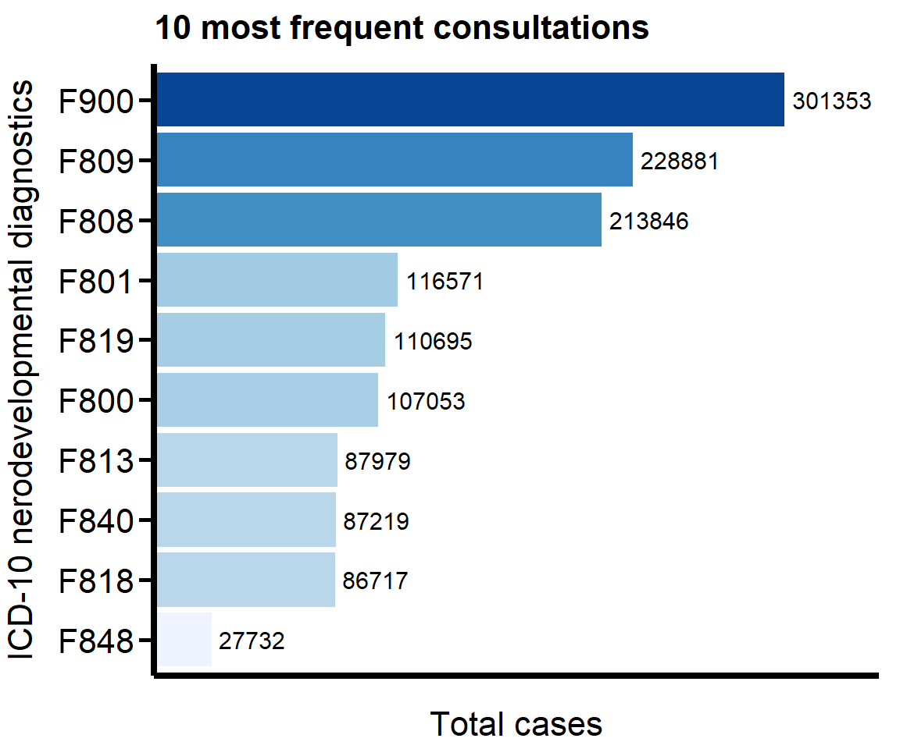

This chunk sources the _common.R script, which loads all packages, the Plot_theme, and the main Neuro_Data data frame.
3.2 Consultations per Diagnostic
We begin by examining how often each diagnostic category appears in the consultation records. This provides a broad overview of the distribution of neurodevelopmental conditions in the dataset and helps us identify which diagnoses account for the largest share of consultations.
3.2.1 Data Preparation
We group the full dataset by diagnostic category and compute the total number of consultations associated with each condition. This step collapses the dataset across departments and years, allowing us to quantify the overall importance of each diagnostic group at the national level.
The full dataset contains dozens of diagnostic categories, and plotting all of them at once would obscure meaningful patterns. To focus on the most prevalent conditions, we extract the 10 diagnostic categories with the highest number of consultations using slice_max(). The bar chart in Figure fig-Diagnostics_Top10 displays these top diagnoses, ordered from the most to the least frequent. We annotate each bar with the exact number of consultations and use a color gradient to highlight the relative magnitude of each category.
Code
# Filter for the 10 most frequent casestop_10_data <- Summary_Diagnostic %>%slice_max(Total_Cases, n =10)# Create the bar plotDiagnostic_fig_Top10 <-ggplot(top_10_data, aes(y =reorder(Diagnostic, Total_Cases), # Re-ordered smallest to largest for this plotx = Total_Cases,fill = Total_Cases)) +geom_bar(stat ="identity") +scale_fill_distiller(palette ="Blues", direction =1) +geom_text(aes(label=Total_Cases), vjust=0.5, hjust =-0.1, color="black", size=4) +labs(x ="Total cases", y ="ICD-10 nerodevelopmental diagnostics", title ="10 most frequent consultations") + Plot_theme +theme(axis.text.x=element_blank(),axis.ticks.x=element_blank(),legend.position ="none") +scale_x_continuous(expand =expansion(mult =c(0, 0.15)))# Save the new figureggsave(Diagnostic_fig_Top10,filename ="Plots/Diagnostic_fig_Top10.png",width =16, height =15,units ="cm")Diagnostic_fig_Top10

Figure 3.1: Distribution of the 10 most frequent neurodevelopmental diagnostics (CIE-11).
The distribution of consultations is heavily concentrated in a small number of diagnostic categories. The hyperactive disorder diagnosis (F900) is by far the most common, with more than 300,000 consultations. Other highly frequent diagnoses include mixed developmental disorders (F809) and speech and language disorders (F808), each surpassing 200,000 consultations. Even the least frequent categories in the top 10 exceed 80,000 consultations, indicating that a limited set of neurodevelopmental conditions dominate the national consultation load.
3.2.3 Full Diagnostic Table
To provide a complete overview of the diagnostic spectrum, we construct a table that lists all ICD-10 neurodevelopmental diagnostic categories and their total number of consultations. Because the full list is long, we sort the diagnostics from most to least frequent and then distribute them into three column groups. We format the resulting wide table with gt, add column group headings, and apply a simple APA-style layout. The table is exported both as LaTeX (for direct inclusion in the manuscript) and as a Word document, so that readers and collaborators can easily reuse or adapt the information.
library(flextable)library(officer)# Build a flextable with grouped headers for Word exportpublication_table_ft <-flextable(multi_col_data)publication_table_ft <- publication_table_ft %>%# First header row: group labelsadd_header_row(values =c("Group 1", "Group 2", "Group 3"),colwidths =c(2, 2, 2) ) %>%# Second header row: column labelsset_header_labels(Diagnostic_1 ="Diagnostic", Cases_1 ="Cases",Diagnostic_2 ="Diagnostic", Cases_2 ="Cases",Diagnostic_3 ="Diagnostic", Cases_3 ="Cases" ) %>%theme_apa_flextable() %>%# Center group headers and column labels; bold themalign(part ="header", align ="center") %>%bold(part ="header", bold =TRUE) %>%# Right-align numeric columns in the bodyalign(j =c("Cases_1", "Cases_2", "Cases_3"),align ="right",part ="body" ) %>%# Add a table note at the bottomadd_footer_lines(values ="Note. ICD-10 neurodevelopmental diagnostics, ordered by total number of consultations." ) %>%align(part ="footer", align ="left")# Export to Wordsave_as_docx("Table 1. Consultations by ICD-10 neurodevelopmental diagnostic category"= publication_table_ft,path ="Tables/Diagnostic_table.docx")
3.3 Create Data Subset for Downstream Analysis
Based on the table and plot, we see that “F900”, “F809”, and “F808” are the most frequent diagnostics. For the next part of the analysis (see Deep Dive: Top 3 Diagnostics), we will focus only on these three.
This chunk filters the original Neuro_Data to keep only these diagnostics and saves the result as a new CSV file. This new file will be the input for the next notebook.